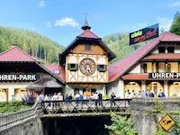
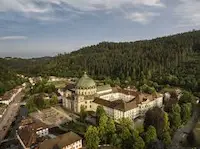
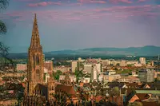
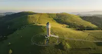

Trips

A lovely town famous for its cuckoo clocks and one of Germany’s highest waterfalls. It’s a great place to experience traditional Black Forest culture.

A small town hidden in the forest, known for its stunning basilica with a huge dome and a peaceful monastery nearby. It feels calm and full of history.
A large and peaceful lake surrounded by forested hills. You can swim, rent a boat, or just enjoy a walk along the shore — it’s one of the prettiest spots in the region.

A lively and historic city with charming cobblestone streets, colorful houses, and the impressive Freiburg Cathedral. It’s also known for its sunny weather and relaxed atmosphere.

The highest mountain in the Black Forest, perfect for hiking in summer and skiing in winter. The views from the top are incredible, and you can even see the Alps on clear days.